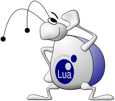

Infon Battle Arena
Eine Einführung

http://infon.dividuum.de/
Florian Wesch
fw@dividuum.de
Worum geht es?
Infon ist ein Client/Server Realtime Multiplayer Programmier Spiel mit viel Gewusel
- Client/Server
- Realtime
- Multiplayer
- Programmierung
- Spiel :-)
Ziel des Spiels
- Fressen, Weiterentwickeln, Reproduzieren
- Feinde töten
- "King of the Hill" (koth) Tile erobern.
- Punkte holen und dadurch das Spiel gewinnen
Die Welt
- Unterschiedliche Level
- Tile basiert
- Jedes Tile ist 256x256 Einheiten gross
- 2 Tile Typen: begehbar und nicht begehbar
- Spezielles King of the Hill Tile
Futter
- Level legt fest, wo und wieviel Futter entsteht.
- Futter ist die einzige Energiequelle
The Viecher
Es gibt 3 verschiedene Arten: | Typ 0: Kann 10000 Futtereinheiten essen. Kann sich in alle anderen Typen umwandeln. Wird mit abnehmender Gesundheit langsamer. Kann Typ 2 angreifen |
 | Typ 1: Kann alle anderen Arten angreifen. Sehr robust. Kann 20000 Futter aufnehmen. |
 | Typ 2: Kann fliegen. Schwach, dafuer sehr schnell. |
Die unterschiedlichen Zustände
- Idling
- Walking - Eine zuvor festgelegte Position anlaufen/-fliegen.
- Eating - Futter vom aktuellen Tile aufnehmen.
- Healing - Aufgenommenes Futter in Lebensenergie umwandeln.
- Attacking - Andere Viecher angreifen.
- Converting - Mit Hilfe aufgenommenen Futters in einen anderen Typ umwandeln.
- Spawning - Nachwuchs erzeugen. Braucht Futter und Lebensenergie.
- Feeding - Futtertransfer zwischen eigenen Viechern.
Der Client
- Schlank, portabel, modular.
- Kann unterschiedliche Renderer für die Ausgabe verwenden.
SDL Renderer
Spielen
- Ein beliebiger Telnet Client
- Verbinden zum Spielserver
- Joinen
- Code hochladen
- Debuggen
- Gewinnen :-)
Verbinden
Grundlagen
- Eine Spielrunde dauert 1/10 Sekunde
- Jeder Spieler hat eine eigene Lua Umgebung.
- Alle Aktionen sind durch Code steuerbar.
- Neuer Code kann jederzeit hochgeladen werden.
Lua
- Schnell
- Einfache, aber sehr praktische Syntax.
- Schnell erlernbar.
- Dokumentation gibt es auf http://www.lua.org/
Hello World
Beispiel Botcode - The Hello Bot
function Creature:main()
self:screen_message("hello")
self:sleep(1000)
self:screen_message("world")
self:sleep(1000)
end
Random Walker
function Creature:main()
local x1, y1, x2, y2 = world_size()
while not self:set_path(math.random(x2 - x1) + x1,
math.random(y2 - y1) + y1) do
end
self:begin_walk_path()
while self:is_walking() do
self:wait_for_next_round()
end
end
self:wait_for_next_round()
- Unterbricht die Aufführung der aktuellen Kreatur.
- Sobald alle Kreaturen fertig sind, geht das Spiel weiter.
- In der nächsten Runde wird die Aufführung hinter
wait_for_next_roundfortgesetzt.
instructions.
wait_for_next_round() example
function Creature:sleep(msec)
local time = game_time()
while time + msec > game_time() do
self:wait_for_next_round()
end
end
Creature Thread Status
<creature 5 [15488,5760] type 0, health 91, food 0, state idle>:
------------------------------
thread status : suspended
stack traceback:
./player-highlevel.lua:254: in function 'wait_for_next_round'
./player-highlevel.lua:223: in function 'sleep'
[string "paste 104 from client 10"]:3: in function 'main'
./player-highlevel.lua:229: in function <./player-highlevel.lua:227>
Kämpfen
- In Reichweite bewegen
- Das Ziel auswählen
- Kreature Zustand auf ATTACK setzen
- wait_for_next_round aufrufen
Attacking
function Creature:attack(target)
if not self:set_target(target) then
return false
end
if not self:begin_attacking() then
return false
end
while self:is_attacking() do
self:wait_for_next_round()
end
return true
end
Weitere Fähigkeiten
- Infos ueber Feinde mit
self:get_nearest_enemy() - Umwandeln mit
self:convert()
Event Handler 1
Beim Auftreten einiger Ereignisse werden Event Handler der jeweils betroffenen Kreatur aufgerufen:- onSpawned - Nachdem die Kreatur erzeugt wurde
- onRestart - Nach einem Restart (via 'r').
- onAttacked - Nach einem Angriff auf die Kreatur.
- onKilled - Nachdem die Kreatur getötet wurde.
Event Handler 2
Des weiteren können globale Funktionen definiert werden, um auf Spielereignisse zu reagieren:- onGameStart - Wird aufgerufen, nachdem ein neues Level gestartet wurde
- onRoundStart - Wird in jeder Runde vor der Ausführung der einzelnen Kreaturen aufgerufen
- onRoundEnd - Wird in jeder Runde nach Ausführung der einzelnen Kreaturen aufgerufen.
Lowlevel
function Creature:begin_walk_path()
return set_state(self.id, CREATURE_WALK)
end
- Die objektorientierten function sind zum Grossteil Wrapper um die lowlevel Funktionen, die das Spiel bereitstellt
- Die meisten Lowlevel Funktionen erwarten die id einer eigenen Kreatur als Parameter.
- Natürlich kann man durch verwenden anderer IDs keine fremden Kreaturen steuern :-)
- Die Highlevel API befindet sich in api/oo.lua.
Probleme 1
function Creature:main()
while true do
self:wait_for_next_round()
end
end
- Wird dieser Code hochgeladen und anschliessend weiterer Code mit einer main Funktion hochgeladen, so wird dieser nicht aktiv, da noch die alte Version ausgeführt wird.
- Um die neue Funktion zu aktivieren, muss in der Console 'r' getippt werden. Dies startet in alles Kreaturen die main Funktion neu
Probleme 2
- In Lua sind Variablen per default global. Um eine Variable als lokal zu definieren muss local verwendet werden. Siehe dazu Programming in Lua welches online abrufbar ist.
- Hat ein Spieler keine verbundenen Clients, so wird der Spieler nach 120 Sekunden gekickt
Debugging
- Mittels 'p' können Tabelleninhalte ausgegeben werden
- Mit 'i' kann der aktuelle Stack alle Kreaturen angezeigt werden. Dort stehen auch Fehlermeldungen.
- In #infon auf irc.freenode.net fragen :-)
Weitere Informationen
- Tutorials und Doku gibt es auf http://infon.dividuum.de/
- IRC channel #infon auf irc.freenode.net
Und jetzt?
- Botcode schreiben
- Neue Levels entwerfen
- Einen neuen Renderer hacken (Sauerbraten anyone?)
- Sourcecode und Binaries gibt es auf http://infon.dividuum.de/